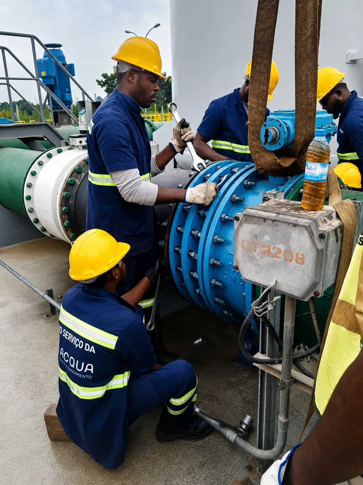

Sobre a EPASB-EP
Água e saneamento como serviço público essencial
Uma empresa pública orientada para o abastecimento de água e o saneamento, com foco na qualidade do serviço, sustentabilidade e proximidade com as comunidades da província de Benguela.
Quem somos
Ao serviço das comunidades de Benguela
A Empresa Provincial de Água e Saneamento de Benguela, EPASB-EP, tem como foco a prestação de serviços relacionados com o abastecimento de água e o saneamento na província de Benguela.
A sua actuação está ligada à gestão e operação da infra-estrutura necessária para garantir que a água seja captada, tratada, armazenada e distribuída de forma adequada às populações, bem como à gestão das actividades relacionadas com o saneamento.
A EPASB-EP procura desenvolver uma actuação orientada para a eficiência operacional, a qualidade dos serviços, a sustentabilidade dos recursos hídricos e uma relação cada vez mais próxima com os cidadãos.

Princípios institucionais
Directrizes estratégicas
Missão
Prestar serviços de abastecimento de água e saneamento com qualidade, eficiência e responsabilidade, contribuindo para a saúde, o bem-estar e o desenvolvimento sustentável das comunidades de Benguela.
Visão
Ser uma referência na gestão dos serviços de água e saneamento, reconhecida pela qualidade, eficiência, inovação, sustentabilidade e compromisso com os cidadãos.
Valores
Responsabilidade, integridade, transparência, eficiência, sustentabilidade, inovação, respeito pelas pessoas e compromisso com a qualidade.
Infra-estrutura
Da origem da água ao cidadão
O serviço de abastecimento depende de uma cadeia de infra-estrutura e operações que trabalham em conjunto para levar água às comunidades.
Captação
Recolha da água a partir das fontes disponíveis e destinadas ao abastecimento público.
Tratamento
Processos destinados a garantir que a água cumpra os requisitos necessários para o abastecimento e consumo.
Reservação
Armazenamento e gestão da água tratada para apoiar a regularidade do abastecimento.
Distribuição
Transporte da água através da rede de distribuição até aos pontos de consumo.
Saneamento
Actividades relacionadas com a gestão adequada das águas residuais e a protecção do ambiente.
Controlo da qualidade
Acompanhamento dos processos e parâmetros relacionados com a qualidade da água.
Compromisso
Uma infra-estrutura que existe para servir pessoas
O trabalho da EPASB-EP não termina na infra-estrutura. O objectivo final é garantir um serviço que tenha impacto real na vida das famílias, das instituições e das actividades económicas da província.
Por isso, eficiência operacional, protecção dos recursos hídricos, melhoria contínua e proximidade com o cidadão fazem parte de uma mesma responsabilidade: prestar um serviço público cada vez mais confiável.
Corrente de Benguela
A água e o saneamento são essenciais para a saúde, a qualidade de vida, o desenvolvimento económico e o bem-estar das comunidades.
A identidade da EPASB-EP representa esse compromisso: garantir serviços essenciais com eficiência, responsabilidade e respeito pelo ambiente.
Como trabalhamos
Uma operação orientada para a continuidade
Operação
Acompanhamento das infra-estruturas e dos sistemas necessários para manter o serviço de abastecimento e saneamento em funcionamento.
Manutenção
Intervenção preventiva e correctiva sobre equipamentos e redes, procurando reduzir falhas e melhorar a disponibilidade do serviço.
Qualidade
Monitorização dos processos associados à água e atenção permanente às condições de qualidade do serviço prestado.
Atendimento
Comunicação com os cidadãos para receber pedidos, reclamações, sugestões e ocorrências relacionadas com os serviços.